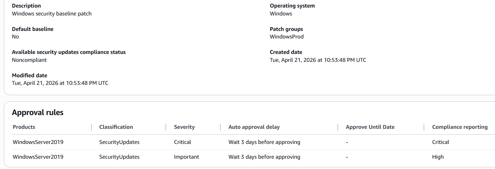
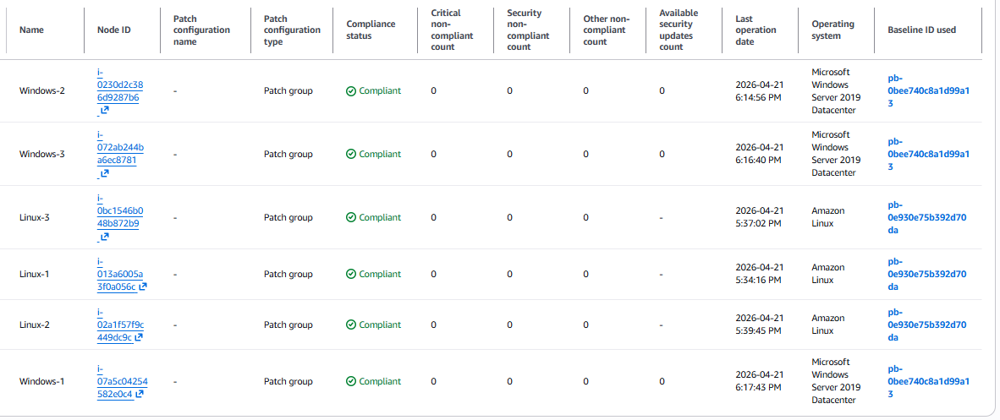
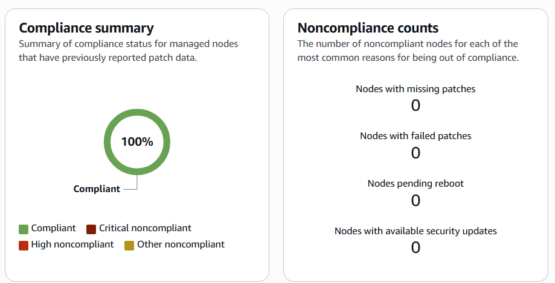

In cloud environments, patching is a core part of maintaining security and consistency. This project focused on automating patching workflows across Windows and Linux EC2 instances using AWS Systems Manager.
Configuring Patch Baselines
I created a custom Windows patch baseline focused on security updates and used AWS-managed baselines for Linux systems.

Executing Patch Operations
Patch groups were used to organize instances and apply updates across environments.

Verifying Compliance
After execution, all instances reached full compliance with zero missing updates.

Key Takeaways
This project reinforced how automation and policy-based patching are critical for maintaining secure cloud environments at scale.